本次分析以 http://okexi.xyz (ip 122.114.176.245) 为测试网址
以三次TCP握手建立的连接为分析对象
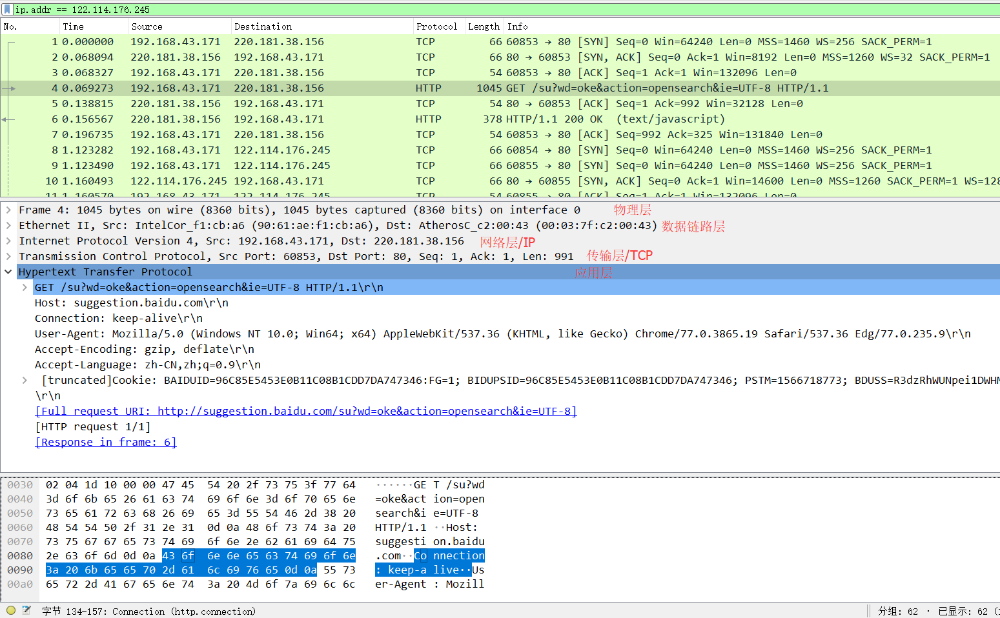
TCP/IP 报文格式
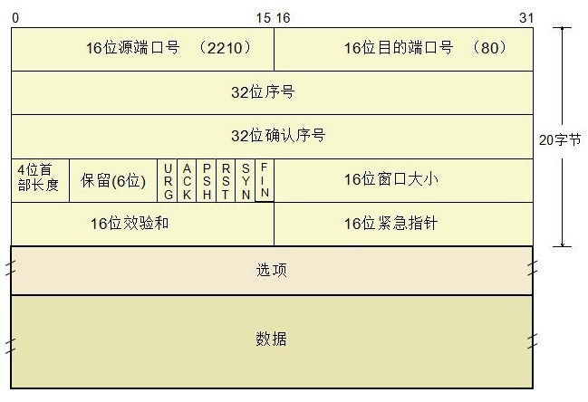
源端口/目的端口
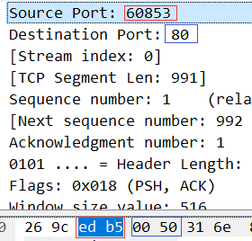
32位序列号
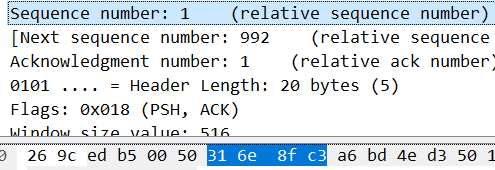
32位确认序号
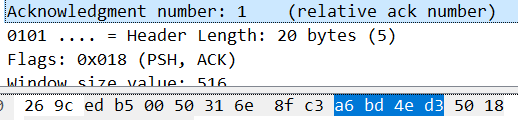
4位首部长度,0101(5)，说明报头长度为 20 Byte，0x018表示设置了ACK为1（应答有效），和PSH为1（推送功能）现在的保留位为三位
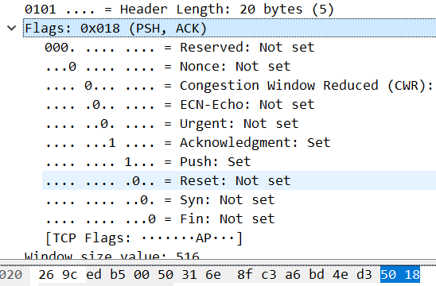
窗口大小 0x0204(516),表示源主机最大能接收516字节
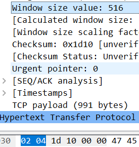
16位校检和-包含TCP首部和TCP数据段，这是一个强制性的字段，一定是由发送端计算和存储，由接收端进行验证
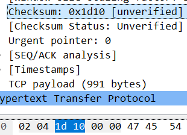
16位紧急指针-只有当URG标志置为1时该字段才有效，紧急指针是一个正的偏移量，和序号字段中的值相加表示紧急数据最后一个字节的序号。TCP的紧急方式是发送端向另一段发送紧急数据的一种方式。
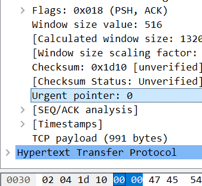
第一次握手，客户端发送一个TCP，标志位为SYN=1，序号seq为Sequence number=0，客户端请求建立连接
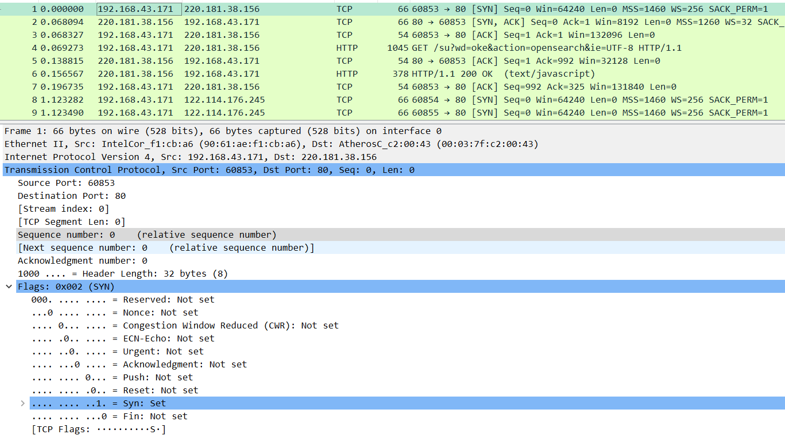
第二次握手，服务器向客户端返回一个数据包，SYN=1，ACK=1，将确认序号(Acknowledgement Number)设置为客户的序号seq(Sequence number)加1，即0+1=1
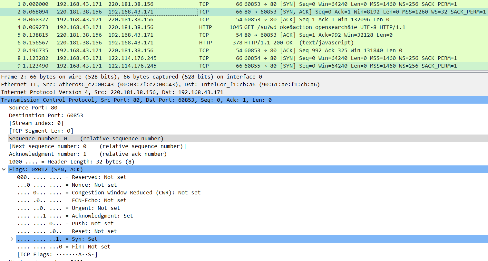
第三次握手，客户端收到服务器发来的包后检查确认序号(Acknowledgement Number)是否正确，即第一次发送的序号seq加1（X+1= 0+1=1）。以及标志位ACK是否为1。若正确，客户端会再向服务器端发送一个数据包，SYN=0，ACK=1，确认序号(Acknowledgement Number)=Y+1=0+1=1，并且把服务器发来ACK的序号seq(Sequence number)加1发送给对方，发送序号seq为X+1= 0+1=1。客户端收到后确认序号值与ACK=1，至此，一次TCP连接就此建立，可以传送数据了。
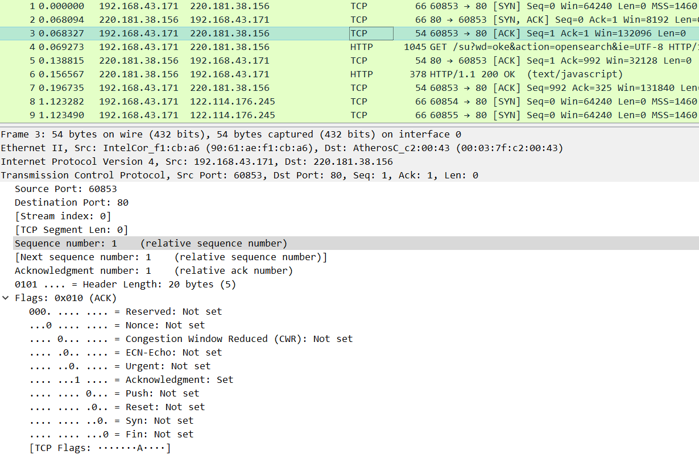